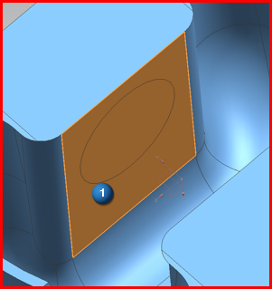
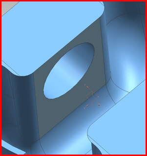

Trim out the hole
Use the Trimmed Sheet command to trim out the hole.
 Trimmed Sheet (Feature group)
Trimmed Sheet (Feature group)
-



-
 Object (Select Object)
Object (Select Object)
-

Notice that in the Trimmed Sheet dialog box, the Select Region (0) has changed to Select Region (1), which indicates that a region has been selected. The software infers this region from your target selection.
-
OK
